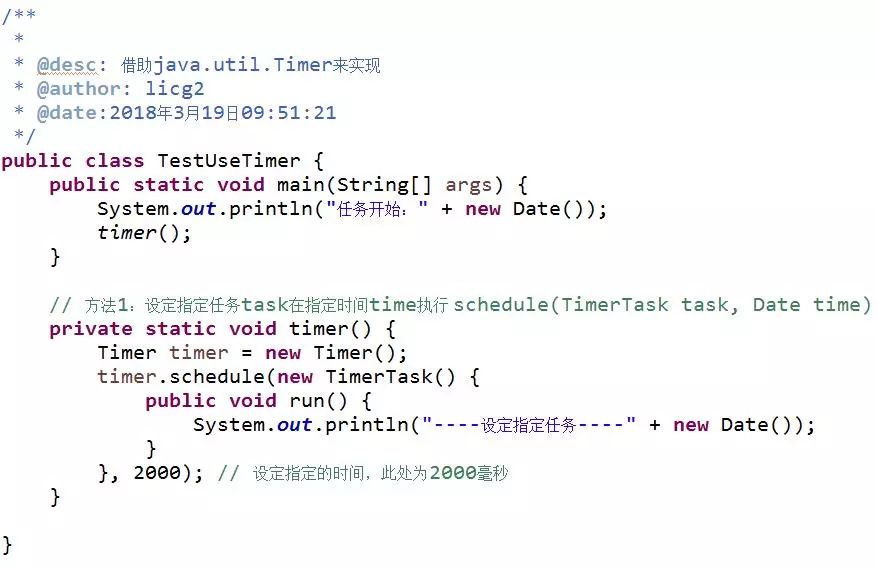

点击上方“Java架构沉思录”，选择“置顶公众号”。
有内涵、有价值的文章第一时间送达！
定时任务，指的是在编程过程中无须做复杂控制的前提下执行简单的定时操作。
在项目中，我们常常需要在特定的时间执行一些任务，比如定时删除服务器存储的数据缓存，定时获取数据以及定时发送推送等等。
本文将介绍三种常用的实现定时任务的方法，希望能给大家在日常项目中带来一些启示和帮助。
一、Timer类
在java中一个完整的定时任务需要由Timer和TimerTask两个类配合完成。其中Timer是一种工具，线程用其安排在后台线程中执行的任务，可安排任务执行一次或者定期重复执行；而TimerTask是由Timer安排执行一次或者重复执行的任务。
Timer中提供了四个构造方法：
（1）schedule(TimerTask task, Date time)——安排在指定的时间执行指定的任务；
（2）schedule(TimerTask task, Date firstTime, long period)——安排指定的任务在指定的时间开始进行重复的固定延迟执行；
（3）schedule(TimerTask task, long delay)——安排在指定延迟后执行指定的任务；
（4）schedule(TimerTask task, long delay, long period)——安排指定的任务在指定的延迟后开始进行重复的固定速率执行。
1、在指定延迟时间执行定时任务

运行结果为：

2、在指定时间执行定时任务

运行结果为：


运行结果为：

4、Timer类小结
Timer类是一种简单实用的实现定时任务的方法，然而它存在着自身的缺陷：
（1）Timer对调度的支持是基于绝对时间而不是相对时间，因此它对于系统时间的改变非常敏感；
（2）Timer线程是不会捕获异常的，如果TimerTask抛出未检查的异常则会导致Timer线程终止，同时Timer也不会重新恢复线程的执行，它会错误的认为整个Timer线程都会取消，已经被安排但尚未执行的TimerTask也不会再执行了，新的任务也不能被调度。因此，如果TimerTask抛出未检查的异常，Timer将会产生无法预料的行为。
二、ScheduledExecutorService
Timer是基于绝对时间的，对系统时间比较敏感，而ScheduledExecutorService则是基于相对时间；Timer内部是单一线程，而ScheduledThreadPoolExecutor内部是个线程池，可以支持多个任务并发执行。
ScheduledExecutor的设计思想是每一个被调度的任务都会由线程池中一个线程去执行，因此任务是并发的，相互之间不会受到干扰；只有当任务的时间到来时，ScheduledExecutor才会真正启动一个线程。
1、Timer的第一个缺陷

运行结果为：

按照设想，任务1与开始时间间隔为1秒，而任务2与开始时间的时间间隔为3秒。然而，由于Timer在执行定时任务时只会创建一个工作线程，当工作线程因为某种原因而导致线程任务执行时间过长，超过了两个任务的间隔时间，则会出现以上情况。
使用ScheduledExecutorService优化：

运行结果为：

2.Timer的第二个缺陷

运行结果为：

可以看到，timerOne抛出异常，而timerTwo并没有执行。
使用ScheduledExecutorService优化：

运行结果为：

3.ScheduledExecutorService小结
可以看到针对Timer类存在的两个缺陷，ScheduledExecutorService可以很好地解决，其思路主要在于每一个被调度的任务都是由线程池中的一个线程去执行，任务之间是并发的，不会互相干扰。
三、Quartz
Quartz是一个完全由Java编写的开源作业调度框架，为在Java应用程序中进行作业调度提供了简单强大的机制。与前两种方法相比，Quartz对于定时的配置更为丰富，实际应用的场景多。
Quartz最重要的3个基本要素：
（1）Scheduler——调度器，所有的调度都由它控制；
（2）Trigger——定义触发的条件，包括SimpleTrigger和CronTrigger等；
（3）JobDetail & Job——JobDetail定义的是任务数据，而真正的执行逻辑在Job中。Scheduler的每次执行都会根据JobDetail创建一个新的Job实例。
1、使用SimpleTrigger


运行结果为：

2、使用CronTrigger


运行结果为：

关于CronTrigger的配置
（1）使用CronTrigger最主要是要掌握Cron表达式，Cron表达式包含6个必要组件和一个可选组件
位置 | 含义 | 允许的特殊字符 |
1 | 秒（0-59） | , - * / |
2 | 分（0-59） | , - * / |
3 | 小时（0-24） | , - * / |
4 | 日期（1-31） | , - * / ? L W C |
5 | 月（JAN-DEC或1-12） | , - * / |
6 | 星期（SUN-SAT或1-7） | , - * / ? L C # |
7 | 年（可选，1970-2099），若为空，表示全部时间范围 | , - * / |
（2）特殊字符的含义
特殊字符 | 说明 |
* | 通配符，任意值 |
? | 无特定值，通常和其他指定的值一起使用，表示必须显示该值但不能检查 |
- | 范围 |
, | 列分隔符，可以指定一系列的值 |
/ | 增量，表示一个值的增量 |
L | 表示Last，在日期和星期域中表示有所不同。在日期域中，表示这个月的最后一天，而在星期域中，它永远是7（星期六） |
W | 在本月内离当天最近的工作日触发 |
# | 表示该月的第几个星期 |
C | 日历值 |
（3）Cron表达式举例：
"30 * * * * ?" 每半分钟出发
"30 10 * * * ?" 每小时的10分30秒触发
"30 10 1 * * ?" 每天1点10分30秒触发
"30 10 1 20 * ?" 每月20号1点10分30秒触发
"30 10 1 20 10 ? *" 每年10月20号1点10分30秒触发
"30 10 1 20 10 ? 2018" 2018年10月20号1点10分30秒触发
"30 10 1 ? 10 * 2018" 2018年10月每天1点10分30秒触发任务
"30 10 1 ? 10 SUN 2018" 2018年10月每周日1点10分30秒触发
"15,30,45 * * * * ?" 第15秒，30秒，45秒时触发
"15/5 * * * * ?" 每分钟的每15秒开始触发，每隔5秒触发
"15-30/5 * * * * ?" 每分钟的15秒到30秒之间开始触发，每隔5秒触发
"0 0/3 * * * ?" 每小时的第0分0秒开始，每三分钟触发
"0 15 10 ? * MON-FRI" 星期一到星期五的10点15分0秒触发
"0 15 10 L * ?" 每个月最后一天的10点15分0秒触发
"0 15 10 LW * ?" 每个月最后一个工作日的10点15分0秒触发
"0 15 10 ? * 5L" 每个月最后一个星期四的10点15分0秒触发
"0 15 10 ? * 5#3" 每个月第三周的星期四的10点15分0秒
3、Quartz小结
Quartz是一种简单有效的定时任务的实现方法，特别对于定时任务有更多的配置方式，适用范围较广。
四、文章小结
本文讨论了三种简单实用的定时任务的实现方法，分别是Timer、ScheduledExecutorService和Quartz，通过举例介绍其使用方法。希望通过本文的引出，给大家在平时的定时任务实现中提供一些帮助。
原文地址：https://mp.weixin.qq.com/s/BZ65hupWm7O67qIpzFRBkQ Java架构沉思录纠正了部分错别字。Java架构沉思录
一码不扫，何扫天下